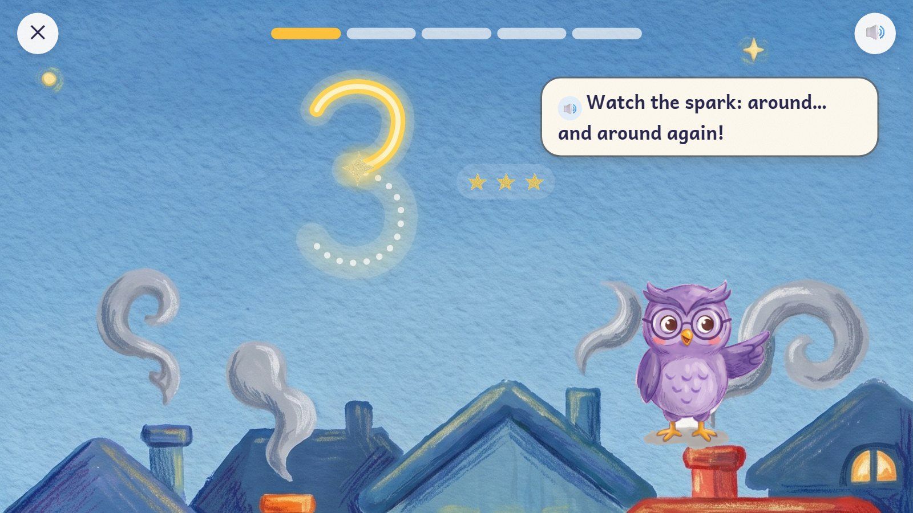
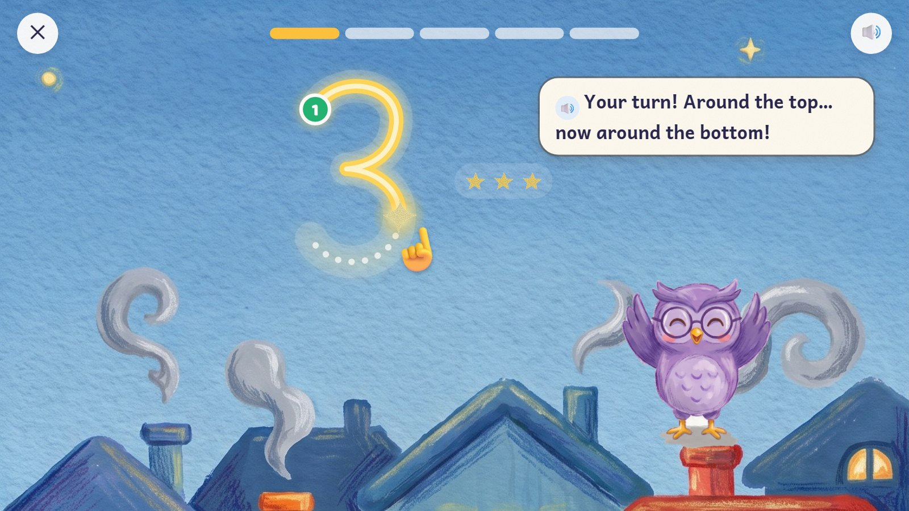
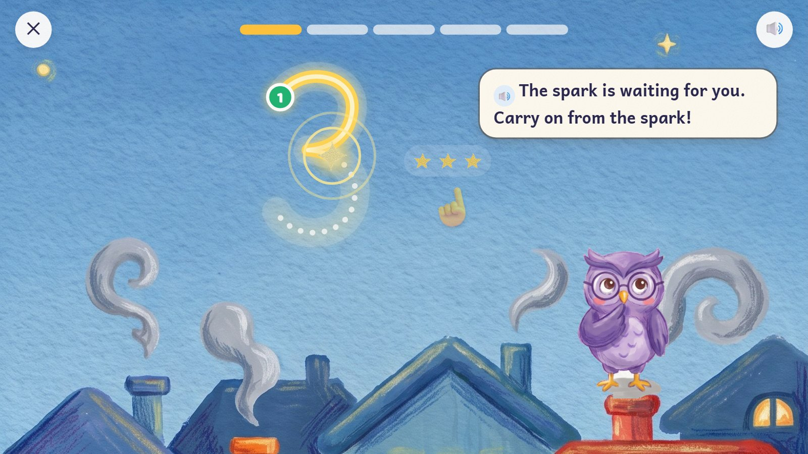
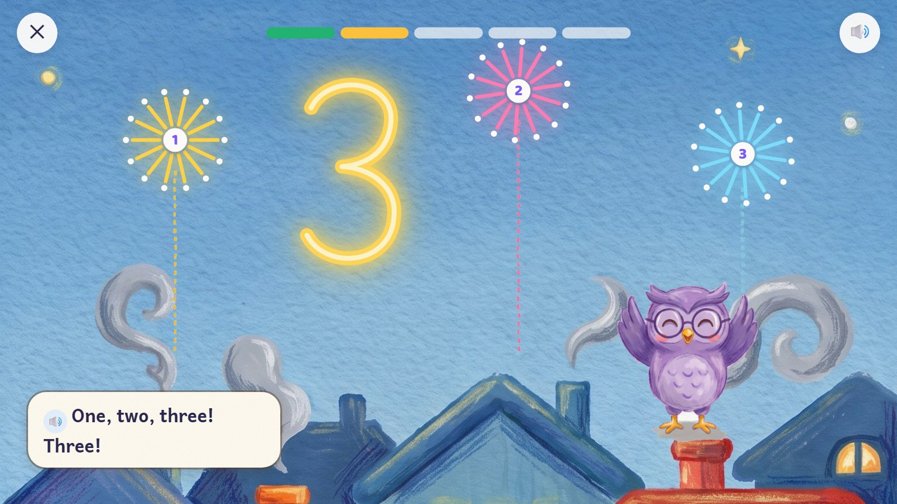
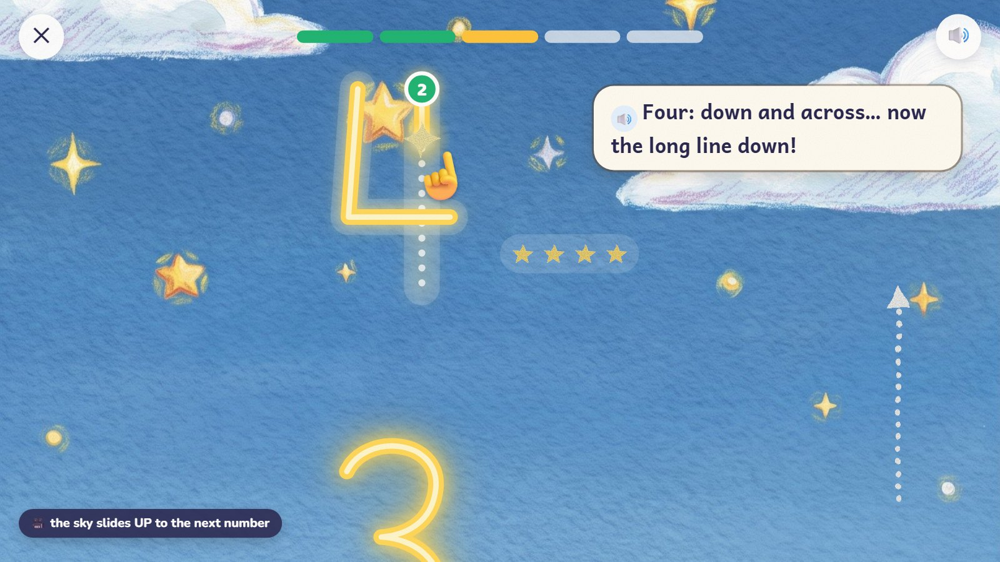
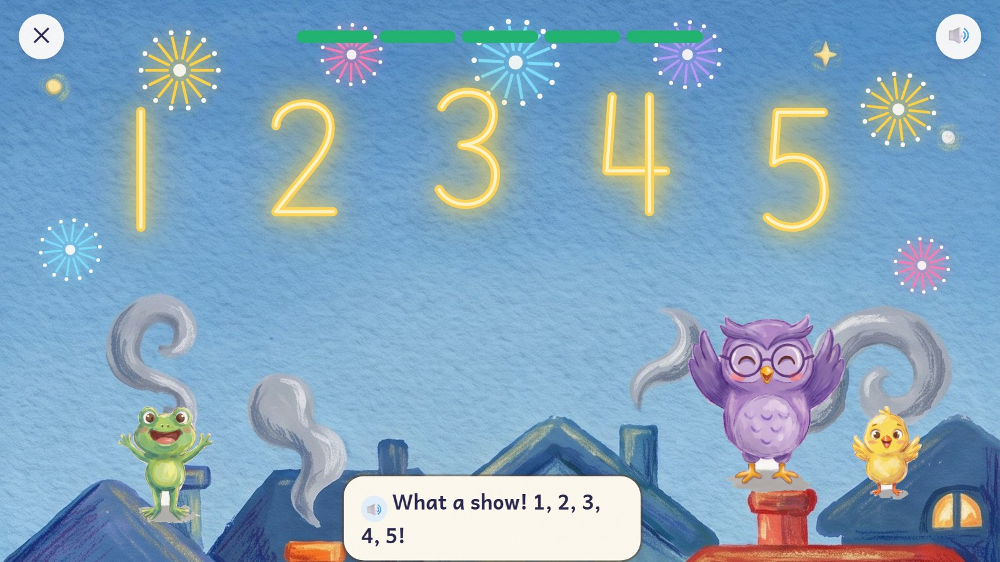

Trace numbers in the night sky with a spark. A golden trail follows the finger. When the number is finished it lights up and fires as many fireworks as it says, counted aloud. Then the sky slides up to the next number.
Pre-K–K · ages 3–6 E04 Number writing (tracing), with counting
Skill: Write the numbers 0–10 starting in the right place and in the right order; link each number to its amount. One activity is 5 rounds, about 90–150 seconds.
A glowing trail under your finger, fireworks that count, climbing the night sky.
Up: the sky slides up to the next number.
The five numbers of the round glow over the town and the fireworks go off together; the friends watch from the roofs.

The spark draws the 3 by itself once, slowly. Three little stars beside it show how many 3 is.
🔊 "Watch the spark: around… and around again!"
Behind the scenes: One way of writing each number throughout (a plain 1, an open 4, a 5 in one stroke). A school's own way can replace it.

A green start dot shows where to begin. The child drags the spark and the golden trail follows the finger.
🔊 "Your turn! Around the top… now around the bottom!"
Behind the scenes: How close the finger must stay depends on age: wide at 3, tighter at 6. These are first guesses, to test with children.

The finger slips off. The trail just stops and the spark waits where it left the path, glowing gently.
🔊 "The spark is waiting for you. Carry on from the spark!"
Behind the scenes: Nothing turns red or rubs out. Slipping off is not a wrong answer and costs no star.

The 3 glows and fires three fireworks, one after another, counted aloud.
🔊 "One, two, three! Three!"
Behind the scenes: About half a second a firework. Zero fires none.

The sky slides up. The 4 has two strokes: the first is done, and the second start dot (2) has appeared.
🔊 "Four: down and across… now the long line down!"
Behind the scenes: The next start dot appears only when the stroke before it is finished.

All five numbers glow over the town and the fireworks go off together.
🔊 "What a show! 1, 2, 3, 4, 5!"
Behind the scenes: Neat writing is recorded apart from knowing the number: tracing alone never marks a number as learned.
The frames are mock-ups: Gemini's drawings (backgrounds, friends, things) and shapes and numbers drawn by code, put together as the app would at run time. In the app everything moves; here it stands still.
| What changes | Range |
|---|---|
| Numbers | 1, 2, 3, then 0, 4, 5, then 6–9, then 10 |
| Help | the whole path → a dotted path → the start dot only → a blank sky (write it from memory) |
| Looks for the same game | Sand Signs (a finger in sand), Road Painter (a paint roller), Thread Trail (stitching) |
| Left-handed | the buttons move to the right; nothing covers the number |
| Planned activities | E04: 20 cards for 0–10 added to the first pilot (13 engines, 270 cards); 10 more for 11–20 later |
| Step | In this activity |
|---|---|
| 1. See it | The spark draws the number while the child watches and counts the stars. |
| 2. Fill one part | Half is already drawn (or one stroke); finish it. |
| 3. On your own | Write a number you hear, on a blank sky. |
| 4. Check it | "Is this 3 the right way round?" (a mirror 3), then write it properly beside it. |
| 5. Word problem | "Count the friends on the roof and write how many." |
| Mistake | Looks like | What happens (never red, never "wrong") |
|---|---|---|
| Starts at the wrong end | begins the 3 at the bottom | the start dot pulses; the spark waits there |
| Mirror numbers | Ɛ for 3, a back-to-front 7 | in "Check it", compared with the right one |
| Cuts across a curve | skips the middle of an 8 | the skipped part stays unfinished |
| 6 for 9 | the number does not match the stars | "How many stars are there?" |
Test robot: Traces each stroke from its start dot along the path and checks the strokes must be finished in order. It slips off the path once to check nothing is lost, and checks the fireworks match the number.